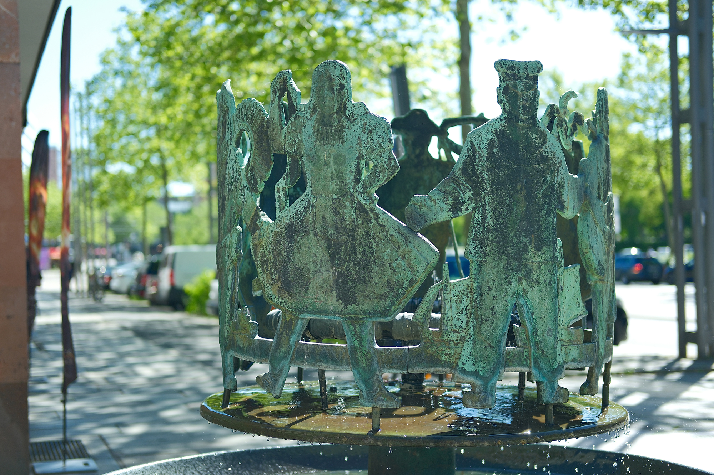
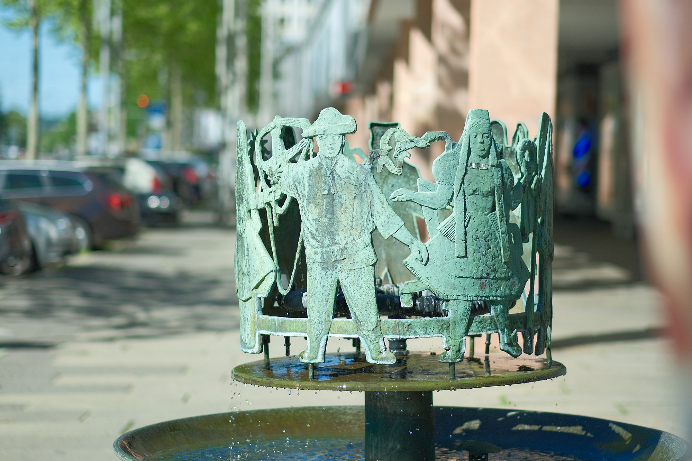
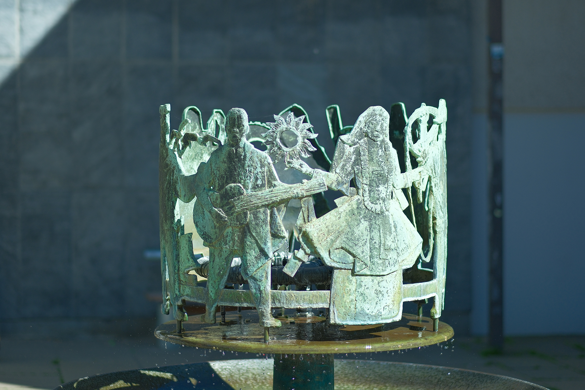
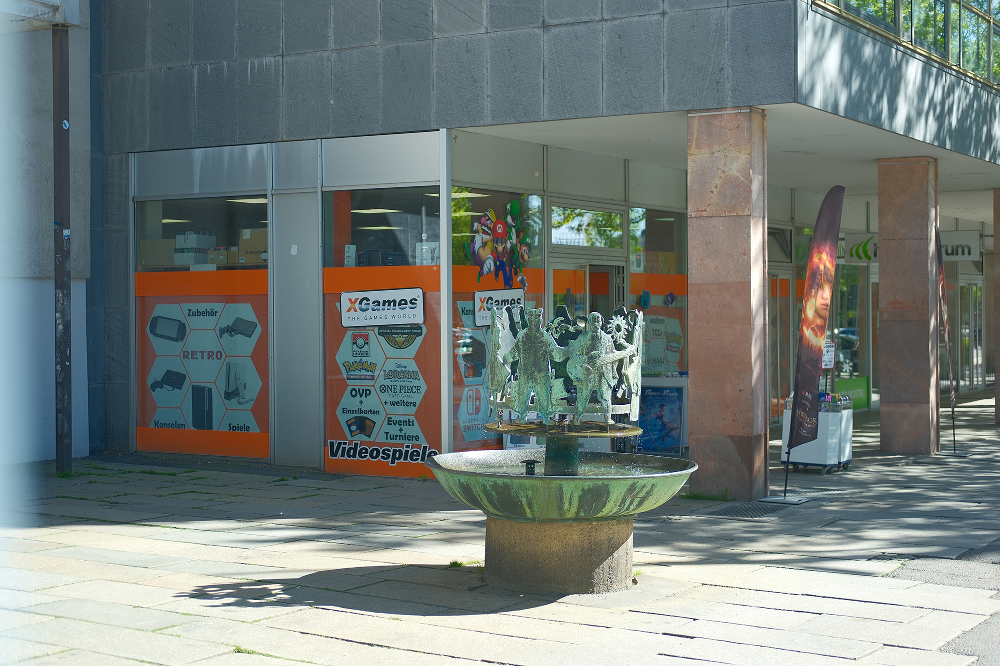

Recherche und Werkbeschreibung: Roman Pilz. Text und Fotografien wechseln sich wie in einem Magazin ab. Ein Klick auf ein Bild öffnet die Großansicht.
Der Freiberger Bildhauer Kohl erhielt 1965 die Ehre, als "Auswärtiger" die wenige Zeit zuvor fertiggestellte Straße der Nationen mit einem Brunnen zu verschönern. Anlass war die große Feier zum Stadtjubiläum – 800 Jahre Chemnitz/Karl-Marx-Stadt von 1165 bis 1965.
Kohl wählte als Thema, passend zum programmatisch auf die Internationalität des Sozialismus verweisenden Straßennamen, die Völkerfreundschaft. Bereits Ende der 1940er Jahre wurde die ehemalige Königstraße in Straße der Nationen umbenannt. Das Leitbild und Motto der "Völkerfreundschaft" wurde schon früher, 1935, von Stalin geprägt und setzt das friedliche Zusammenleben der vielen unterschiedlichen Völker in der Sowjetunion als Anspruch.
Gottfried Kohl wurde 1921 in Freiberg geboren und verstarb 2012 am selben Ort. Kohl machte bei seinem Vater eine Lehre zum Drechslerlehre und von 1937 bis 1939 eine Lehre als Holzbildhauer in Dresden. Dort bildete er sich zugleich durch Abendstudien an der Kunstakademie weiter.
Durch ein Stipendium wurde ihm von 1939 bis 1940 ein Studium an der Holzschnitzschule Bad Warmbrunn bei Kurt Aschauer und Cirillo Dell’Antonio ermöglicht, das zur Vorbereitung eines Studiums an der Kunstakademie München dienen sollte, jedoch durch seinen Kriegsdienst und Gefangenschaft nicht zustande kam. 1947 legte er die Meisterprüfung ab und führte den elterlichen Betrieb weiter - nebenbei arbeitete er aber vor allem als freiberuflicher Künstler. 1948 war er Gründungsmitglied der Künstlervereinigung „Kaue“ in Freiberg.
Von 1951 bis 1956 wirkte Kohl in Berlin bei Hermann Henselmann als Leiter der Bildhauerwerkstatt des Nationale Aufbauwerks am Wiederaufbau und der Umgestaltung Ostberlins mit. a. Seine Arbeit wurde mehrfach ausgezeichnet.
So erhielt er zum Beispiel 1971 den Kulturpreis des Bezirks Karl-Marx-Stadt und 1987 den Nationalpreis der DDR. 2008 wurde er mit der Ehrenbürgerschaft der Stadt Freiberg ausgezeichnet.
In diesem Sinne kann der Chemnitzer Brunnen als Miniaturversion des monumentalen, von 1951 bis 1954 realisierten Moskauer "Brunnen der Völkerfreundschaft" gesehen werden. Auf bis zu 80 Meter Breite und über 7 Meter Höhe symbolisieren dort 16 vergoldete Frauenfiguren die damaligen Unionsrepubliken der Sowjetunion in typischen Landestrachten.
Beim Freiberger Bildhauer sind es sieben Figuren, abwechselnd ein Mann und eine Frau, die in Trachten einen Reigen tanzen. Da die Menschen als relativ flaches Relief ausgeformt sind, erinnern sie an das traditionelle, bildliche Weihnachtsgebäck Spekulatius, das durch Andrücken des Teigs in Holzmodel (flache Hohlformen) hergestellt wird. Ebenso lässt es sich aber auch an Papierfiguren, Scherenschnitte oder kleine Karussells denken. Dinge, die Klein und Groß erfreuen also.

Zu sehen sind eine Art Cowboy mit Lasso, ein Eskimo mit Paddel, ein Gitarrenspieler und ein Seemann neben Frauen mit Bändern und Blumen, die tanzen. Dazu läuft im Sommer, wenn die Brunnen in Betrieb gesetzt werden, unter den Figuren dann noch plätscherndes Wasser über eine runde Scheibe in ein rundes Wasserbecken aus rotem Stein.


